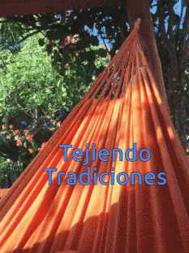

Conoce Morroa sin salir de casa
Preparate para conocer Morroa de la mano de Luis López


Dale click al icono de instagram para ver nuestras historias
Fácil acceso
Desde cualquier dispositivo puedes emprender este recorrido!
Descubre sorpresas
Espera nuevos contenidos y descubre los actuales!
Comparte
Comparte tu experiencia en nuestras redes sociales!